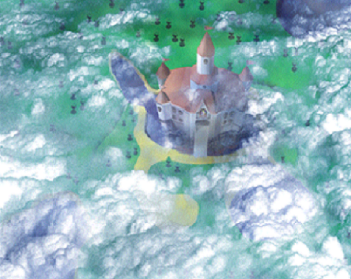
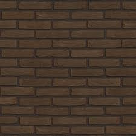
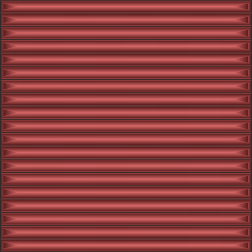
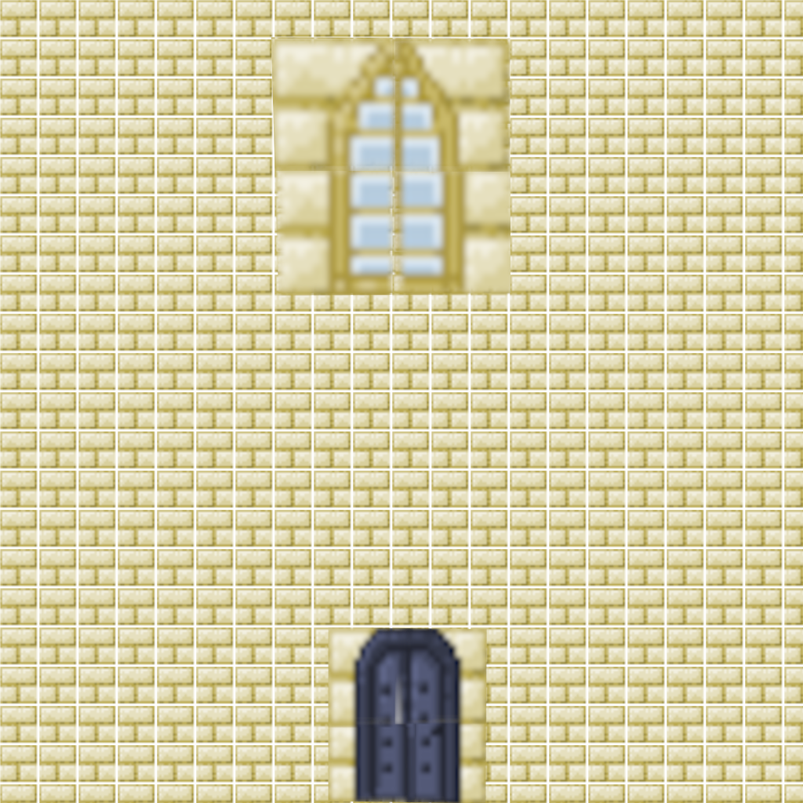

  
CSCI-510: Final Exam Image
Your browser does not support the HTML5 canvas element.
Controls
I think I got a version that I like. I wish I had given myself more time to make triangular prisms.
Use the slider to adjust bridge position along x-axis from -4.0 to 4.0
Bridge X Coordinate: